import pandas as pd
import numpy as np
import matplotlib.pyplot as plt
from scipy.spatial import distance
from collections import Counter
# Load the data
df = pd.read_stata("data/Dehejia_Wahba_2002.dta")
# Create the necessary variables
df['age2'] = df['age']**2
df['age3'] = df['age']**3
df['education2'] = df['education']**2
df['educationXre74'] = df['education'] * df['re74']
df['unemp74'] = np.where(df['re74']==0, 0, 1)
df['unemp75'] = np.where(df['re75']==0, 0, 1)
# Subset to observational and experimental data sets
obs = df[(df['data_id']=='CPS1')|(df['treat']==1)].copy()
exp = df[(df['data_id']=='Dehejia-Wahba Sample')].copy()
exp = exp.apply(pd.to_numeric, errors='coerce')Chapter 3
Code Call-out 3.1 - Propensity Score Matching and Job Training Programs
In this code call-out we will consider a setting originally studied by LaLonde (1986). LaLonde (1986) examines the experimental analysis of the National Supported Work (NSW) experiment. This was an experimentally evaluated work training program in which individuals were (randomly) assigned to treated groups which participated in the approximately 12 month long program, and a control group in which units were assigned to a control condition. Because there is an experimental evaluation, the effect of treatment is known, and LaLonde (1986) sought to document how the effect estimated from observational estimators in which the NSW treated group is compared to “control” groups drawn from large surveys. LaLonde (1986) documents that often these observational methods did quite poorly in approximating the true treatment effect.
This example was revisited by Dehejia and Wahba (2002), Dehejia and Wahba (1999). In this case, the authors consider the same treated group from the experiment, and estimate treatment effects matching it to a control group drawn from the same large surveys (specifically, the CPS and PSID from the United States). They note that when a propensity score matching procedure is used and when matching is based on a series of variables including salaries in the pre-treatment period, the observational methods actually do a reasonably good job in approximating the true experimental estimate. Here we use the same data from Dehejia and Wahba (2002), seeking to replicate their Table 2 which shows how estimates vary based on the particular nature of propensity score matching used. In particular, they consider a range of nearest neighbour methods without replacement, as well as methods with replacement, and with calipers of varying sizes.

Below we will open the data provided by Dehejia and Wahba (2002) and begin working with it. These data actually consist of both the NSW experimental implementation (marked as data_id="Dehejia-Wahba Sample"), as well as the survey data (marked as data_id="CPS1"). Among the NSW sample, there will be both treated and control units (indicated by treat), whereas among the CPS data, there will be no treated units. Our goal will then be to discard the control units from the NSW sample, and seek to generate a control group using propensity score matching. Along with information on individuals’ participation in the program (treat), the dataset contains information about their earnings in 1978 (re78) which follows program participation (in the case of treated observations), and several other covariates such as age, education, race, marital status, and earnings in 1974 and 1975 (pre-treatment outcomes). Below we will open these data, and generate two samples: the original “experimental” sample based on the NSW, and the new sample consisting of both treated units, and survey data which we will use to try to generate our matched controls:
Along with these two samples which we have generated as exp (experimental) and obs (observational) above, we have also generated a number of additional variables based on those available in the data which were used in Dehejia and Wahba (2002)’s calculation of the propensity score.
Now, using the observational data above, we will estimate the propensity score. We will do this using the same variables and procedure described in the note to Table 2 from Dehejia and Wahba (2002), which results in the variable pscore below. As we are only doing this with the observational data, we are using the obs dataframe below. Finally, we examine the propensity score by the actual treatment value below.
import seaborn as sns
import statsmodels.api as sm
xvars = ['age', 'age2', 'age3', 'education', 'education2', 'married',
'nodegree', 'black', 'hispanic', 're74', 're75', 'unemp74',
'unemp75','educationXre74']
X = obs[xvars].copy()
#X = sm.add_constant(X)
y = obs['treat']
logit_model = sm.Logit(y, X).fit()
obs.loc[:, 'pscore'] = logit_model.predict(X)
print(obs['pscore'].describe())
#Examine propensity score output
sns.set(style="darkgrid")
sns.kdeplot(data=obs, x='pscore', hue='treat', fill=True, common_norm=False,bw_adjust=0.5)Optimization terminated successfully.
Current function value: 0.027469
Iterations 12
count 1.617700e+04
mean 1.157625e-02
std 6.487728e-02
min 4.059147e-11
25% 3.059042e-05
50% 1.480954e-04
75% 1.266950e-03
max 8.928061e-01
Name: pscore, dtype: float64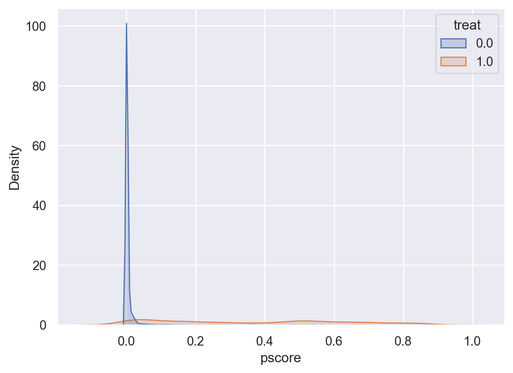
Unsurprisingly, we see that there is substantial mass at 0 among the untreated units. While it is somewhat difficult to observe overlap fully given that there are many more observations in the CPS than in the NSW experiment, we could explore more, for example looking at densities outside the very lowest values to ensure that effectively there are values of the propensity score in the CPS which are similar to those among (treated) NSW units, which suggests a more reasonable overlap, though, of course, there is relatively less mass at the upper end of the propensity score distribution among control units to match to treated units.
sns.kdeplot(data=obs[obs.pscore>0.1], x='pscore', hue='treat',
fill=True, common_norm=False,bw_adjust=0.5)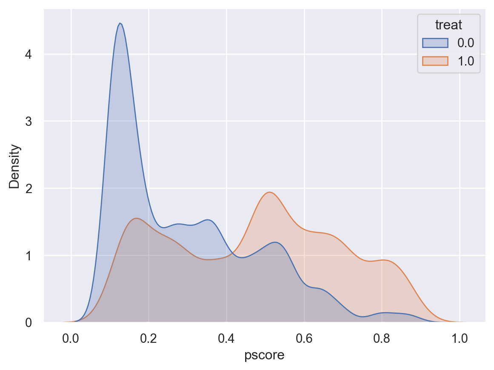
Nearest Neighbour Matching without Replacement
We will now get into the business of matching to generate the ATT based on this propensity score. We will start by considering nearest neighbour matching without replacement. Below we will generate a function nearest_neighbour which accepts as arguments a dataframe, as well as a variable indicating whether units are treated or control, and finally a variable indicating the values of the propensity score. This function will iterate through each treated unit, and will find the nearest match. It will work with the dataset in the order that the data is provided, and once a control has been used, it will remove this control from the list of potential future matched controls. Finally, it will return the dataset consisting only of treated units and their matched controls. It is worth working through this function carefully to ensure that it is clear what is being done in each step. This could of course be written in alternative ways, but it should work to do what we are after.
def nearest_neighbour(df, treat_col, pscore_col):
"""
This function returns a matched control for each unit with treat_col==1.
To generate this matched control, it finds the closest unit with
treat_col==0 based on the variable indicated in pscore_col. Once units
are used as a matched control, they are removed from potential future
controls (matching without replacement).
"""
# Separate treatment and control groups
treated = df[df[treat_col] == 1].copy()
control = df[df[treat_col] == 0].copy()
# Index for holding controls which have been previously used in match
matched_pairs = []
# Iterate through each treated unit and find matched control
for idx, treat_row in treated.iterrows():
# Compute the absolute differences between the treated unit and all control units
control['distance'] = (control[pscore_col] - treat_row[pscore_col]).abs()
# Find the control unit with the minimum distance
closest_control_idx = control['distance'].idxmin()
closest_control_row = control.loc[closest_control_idx]
# Append the treated and control units as a matched pair
matched_pairs.append((treat_row, closest_control_row))
# Remove the matched control unit from the control group
control = control.drop(closest_control_idx)
# Combine the matched pairs back into a single DataFrame
matched_treated = pd.DataFrame([t[0] for t in matched_pairs])
matched_control = pd.DataFrame([t[1] for t in matched_pairs])
matched_units_df = pd.concat([matched_treated, matched_control], ignore_index=True)
return matched_units_df
matched_df = nearest_neighbour(obs.sort_values(['treat','pscore'],
ascending=[False,True]),'treat','pscore')
Ytreat = matched_df[matched_df['treat'] == 1]['re78'].mean()
Ycontrol = matched_df[matched_df['treat'] == 0]['re78'].mean()
print(f"Control mean {Ycontrol}. Treatment mean {Ytreat}, ATT {Ytreat-Ycontrol}.")Control mean 4744.41277931832. Treatment mean 6349.143502065298, ATT 1604.7307227469782.Above we have tried running an implementation of this function with a version of our observational data where the propensity score is ordered from lowest to highest (ordered ascendingly). This returns to us a dataframe we have called matched_df, and in the final lines we calculate average values for the outcome among treated and control units. We then calculate the ATT. If we examine Table 2 of Dehejia and Wahba (2002), we can see that the estimated ATT for nearest neighbour replacement without replacement ordered from low to high is reported as 1605. When we examine our ATT (1604.73), we can see that we have been able to replicate this result. As we wish to generate both the ATTs as well as the characteristics of matched controls, we will write a small function that works with the matched dataframe returning just the details we need.
def summarise_data(df, treat, y, avg_cols):
"""
Calculate the difference of means for a specified column and the average
values for a list of columns.
Parameters:
df (pd.DataFrame): The input DataFrame.
diff_mean_col (str): The name of the column for which to calculate the difference of means.
avg_cols (list): A list of column names for which to calculate the average values.
Returns:
dict: A dictionary with the difference of means, number of controls and the average values.
"""
# Calculate the difference of means for the specified column
ATT = df[df[treat] == 1][y].mean()-df[df[treat] == 0][y].mean()
# Calculate the average values for the specified columns
avg_values = {col: df[col].mean() for col in avg_cols}
# Calculate the number of control units in the data
N_Y0 = len(df[df[treat] == 0].drop_duplicates())
# Combine the results into a dictionary
result = {
'difference_of_means': ATT,
'average_values': avg_values,
'number_controls': N_Y0
}
return resultWe can confirm that this does what we hope, first conducting our nearest neighbour matching procedure with the controls ordered from highest to lowest, and then summarising the resulting dataset to calculate the difference of means estimator as well as the mean characteristics of the matched group. This is saved below as resultsHL, and when we examine these we can see that these are identical to those values displayed in the fifth row of Dehejia and Wahba (2002)’s Table 2.
sumvars = ['age', 'education', 'married', 'nodegree', 'black',
'hispanic', 're74', 're75', 'unemp74', 'unemp75']
matched_df = nearest_neighbour(obs.sort_values(['treat','pscore'],
ascending=[False,False]),'treat','pscore')
resultsHL = summarise_data(matched_df,'treat','re78',sumvars)
print(resultsHL['difference_of_means'])
print(resultsHL['average_values'])1559.160832049396
{'age': 25.54054054054054, 'education': 10.321621621621622, 'married': 0.20540540540540542, 'nodegree': 0.6810810810810811, 'black': 0.8432432432432433, 'hispanic': 0.062162162162162166, 're74': 2200.238184995909, 're75': 1609.632476414861, 'unemp74': 0.3324324324324324, 'unemp75': 0.4540540540540541}We conduct identical processes below for nearest neighbour matching without replacement ordering controls from low to high (resultsLH), and ordering the dataset randomly (resultsR). If we wish, we can inspect these values and will see that they are identical to those displayed in Dehejia and Wahba (2002).
matched_df = nearest_neighbour(obs.sort_values(['treat','pscore'],
ascending=[False,True]),'treat','pscore')
resultsLH = summarise_data(matched_df,'treat','re78',sumvars)
matched_df = nearest_neighbour(obs.sample(frac=1).reset_index(drop=True),'treat','pscore')
resultsR = summarise_data(matched_df,'treat','re78',sumvars)Nearest Neighbour Matching with Replacement
Above we have calculated the values exactly as reported in Dehejia and Wahba (2002) for nearest neighbour matching without replacement, but the table also documents results matching with replacement, and using calipers. Given what we have already done it is, in fact, quite trivial to implement the same procedure with replacement. Previously in the nearest_neighbour function we had been removing controls from the donor pool once they had been matched, and so to conduct a procedure with replacement, we can simply remove these lines from the function! In practice, we would probably make our original function take an argument so that we could simply request whether matching should occur with replacement or not (and indeed, you may very much prefer to do this yourself by returning to the function above), but in the interests of simplicity here, we will just redefine a new function below which strips out the comments and the “without replacement” line of the previous function. In a real code we would, of course, never remove the comments, but because we are simply taking the function from above and simplifying, you can refer to all comments there to ensure that you can follow each step in the procedure. Below, we generate this nearest neighbour without replacement function, and then pass the function the Dehejia and Wahba (2002) data as we have done previously.
def nearest_neighbour_replacement(df, treat_col, pscore_col):
treated = df[df[treat_col] == 1].copy()
control = df[df[treat_col] == 0].copy()
matched_pairs = []
for idx, treat_row in treated.iterrows():
control['distance'] = (control[pscore_col] - treat_row[pscore_col]).abs()
closest_control_idx = control['distance'].idxmin()
closest_control_row = control.loc[closest_control_idx]
matched_pairs.append((treat_row, closest_control_row))
matched_df = pd.DataFrame(
{
'treated': [t[0] for t in matched_pairs],
'control': [t[1] for t in matched_pairs]
}
)
matched_treated = pd.DataFrame([t[0] for t in matched_pairs])
matched_control = pd.DataFrame([t[1] for t in matched_pairs])
matched_units_df = pd.concat([matched_treated, matched_control], ignore_index=True)
return matched_units_df
matched_df = nearest_neighbour_replacement(obs,'treat','pscore')
resultsNNR = summarise_data(matched_df,'treat','re78',sumvars)
print(resultsNNR['difference_of_means'])
print(resultsNNR['number_controls'])
print(resultsNNR['average_values'])1359.5877616263724
162
{'age': 25.586486486486486, 'education': 10.32972972972973, 'married': 0.1810810810810811, 'nodegree': 0.7, 'black': 0.8405405405405405, 'hispanic': 0.062162162162162166, 're74': 2251.4491816752666, 're75': 1524.2437708674252, 'unemp74': 0.3216216216216216, 'unemp75': 0.44594594594594594}We apply this function and save the results as resultsNNR. Once again, if we compare the difference of means estimate with that reported by Dehejia and Wahba (2002), we can see that we have replicated the result entirely.
Caliper Matching
Finally, we need to implement a caliper matching procedure. In Dehejia and Wahba (2002), this procedure consists of matching all observations within some “caliper” surrounding each treated unit’s propensity score. Within that caliper, each treated unit is matched to the mean outcome among all controls. Note that in a standard caliper match one would generally remove units for which no observation is found within the given caliper, however in Dehejia and Wahba (2002) footnote 10 it is noted that in cases such as this, each treated unit is matched with its nearest neighbour (outside of the caliper). This is done within the matching below the else: condition. After we have generated this function we conduct the match with the three different caliper values indicated in the Table (0.00001, 0.00005, and 0.0001).
def caliper_match(df, treat_col, pscore_col, caliper):
treated = df[df[treat_col] == 1].copy()
control = df[df[treat_col] == 0].copy()
matched_pairs = []
for idx, treat_row in treated.iterrows():
control['distance'] = (control[pscore_col] - treat_row[pscore_col]).abs()
control_in_caliper = control[control['distance'] <= caliper]
if not control_in_caliper.empty:
num_observations = control_in_caliper.shape[0]
avg_control_row = control_in_caliper.mean(numeric_only=True)
avg_control_row['NY0']=num_observations
matched_pairs.append((treat_row, avg_control_row))
else:
# If no matches are found within the caliper, find the closest match
closest_match = control.loc[control['distance'].idxmin()].copy()
closest_match['NY0'] = 1
matched_pairs.append((treat_row, closest_match))
matched_treated = pd.DataFrame([t[0] for t in matched_pairs])
matched_control = pd.DataFrame([t[1] for t in matched_pairs])
matched_units_df = pd.concat([matched_treated, matched_control], ignore_index=True)
return matched_units_df
calipers = [0.00001, 0.00005, 0.0001]
resultsCaliper = []
for caliper in calipers:
matched_df_caliper = caliper_match(obs, 'treat', 'pscore', caliper)
print(matched_df_caliper['NY0'].sum())
resultsC1 = summarise_data(matched_df_caliper,'treat','re78',sumvars)
resultsCaliper.append(resultsC1)
print(resultsC1)
print(resultsCaliper)400.0
{'difference_of_means': 1118.795018211571, 'average_values': {'age': 25.535874670905034, 'education': 10.327212900728792, 'married': 0.17794084089833337, 'nodegree': 0.6974271692536973, 'black': 0.8409669049939996, 'hispanic': 0.06250481017538019, 're74': 2259.7105755367793, 're75': 1520.543896504995, 'unemp74': 0.32405231551573016, 'unemp75': 0.4492975602731701}, 'number_controls': 162}
1169.0
{'difference_of_means': 1157.7491888922614, 'average_values': {'age': 25.5549704216622, 'education': 10.313016357937375, 'married': 0.1802642560891203, 'nodegree': 0.7012082733415269, 'black': 0.8398790771670237, 'hispanic': 0.06270471392451106, 're74': 2200.3164731824722, 're75': 1527.503338251887, 'unemp74': 0.3193253582704324, 'unemp75': 0.44677598493199056}, 'number_controls': 162}
2142.0
{'difference_of_means': 1121.7550403491878, 'average_values': {'age': 25.503630096847946, 'education': 10.352785241926039, 'married': 0.17808254747777372, 'nodegree': 0.6972531556277661, 'black': 0.8428608338046517, 'hispanic': 0.06257997024300936, 're74': 2154.1357540233716, 're75': 1538.3188411609547, 'unemp74': 0.3160236056208545, 'unemp75': 0.44811008190904783}, 'number_controls': 162}
[{'difference_of_means': 1118.795018211571, 'average_values': {'age': 25.535874670905034, 'education': 10.327212900728792, 'married': 0.17794084089833337, 'nodegree': 0.6974271692536973, 'black': 0.8409669049939996, 'hispanic': 0.06250481017538019, 're74': 2259.7105755367793, 're75': 1520.543896504995, 'unemp74': 0.32405231551573016, 'unemp75': 0.4492975602731701}, 'number_controls': 162}, {'difference_of_means': 1157.7491888922614, 'average_values': {'age': 25.5549704216622, 'education': 10.313016357937375, 'married': 0.1802642560891203, 'nodegree': 0.7012082733415269, 'black': 0.8398790771670237, 'hispanic': 0.06270471392451106, 're74': 2200.3164731824722, 're75': 1527.503338251887, 'unemp74': 0.3193253582704324, 'unemp75': 0.44677598493199056}, 'number_controls': 162}, {'difference_of_means': 1121.7550403491878, 'average_values': {'age': 25.503630096847946, 'education': 10.352785241926039, 'married': 0.17808254747777372, 'nodegree': 0.6972531556277661, 'black': 0.8428608338046517, 'hispanic': 0.06257997024300936, 're74': 2154.1357540233716, 're75': 1538.3188411609547, 'unemp74': 0.3160236056208545, 'unemp75': 0.44811008190904783}, 'number_controls': 162}]All of the results form this process are saved as resultsCaliper.
Bringing things together
Let’s now bring this all together and provide a final summary table like Dehejia and Wahba (2002). To do this, we will first need to generate the simple unmatched difference in means and experimental estimate which are reported in the first two rows of the Table. This is done quite easily by just taking the difference of means with the full set of NSW data (obs) and the full set of experimental data (exp), and we do this below.
# Summarize unmatched difference in means and experimental estimate
resultsNC = summarise_data(obs, 'treat', 're78', sumvars)
resultsExp = summarise_data(exp, 'treat', 're78', sumvars)Now, based on all this we can summarise the effects, observation numbers, and mean characteristics of controls to generate a comparable table to Table 2 above. We do this below:
# Create the DataFrame with the specified row and column labels
row_labels = ["NSW", "CPS", "Low-to-High", "High-to-Low", "Random",
"Caliper 0.00001", "Caliper 0.00005", "Caliper 0.0001", "NN Replacement"]
col_labels = ["Age", "School", "Black", "Hispanic", "No Degree", "Married", "RE74", "RE75", "ATT"]
results_df = pd.DataFrame(index=row_labels, columns=col_labels)
# Mapping the results to the row labels
results_mapping = {
"NSW": resultsExp,
"CPS": resultsNC,
"Low-to-High": resultsLH,
"High-to-Low": resultsHL,
"Random": resultsR,
"Caliper 0.00001": resultsCaliper[0],
"Caliper 0.00005": resultsCaliper[1],
"Caliper 0.0001": resultsCaliper[2],
"NN Replacement": resultsNNR
}
# Fill the DataFrame with the results
for label, result in results_mapping.items():
results_df.loc[label] = [
result['average_values']['age'],
result['average_values']['education'],
result['average_values']['black'],
result['average_values']['hispanic'],
result['average_values']['nodegree'],
result['average_values']['married'],
result['average_values']['re74'],
result['average_values']['re75'],
result['difference_of_means']
]
# Display the DataFrame
results_df| Age | School | Black | Hispanic | No Degree | Married | RE74 | RE75 | ATT | |
|---|---|---|---|---|---|---|---|---|---|
| NSW | 25.370787 | 10.195505 | 0.833708 | 0.08764 | 0.782022 | 0.168539 | 2102.265381 | 1377.138306 | 1794.343262 |
| CPS | 33.140507 | 12.008284 | 0.082339 | 0.071892 | 0.30055 | 0.705755 | 13880.469727 | 13512.212891 | -8497.515625 |
| Low-to-High | 25.521622 | 10.313514 | 0.843243 | 0.062162 | 0.683784 | 0.205405 | 2190.563642 | 1609.632476 | 1604.730723 |
| High-to-Low | 25.540541 | 10.321622 | 0.843243 | 0.062162 | 0.681081 | 0.205405 | 2200.238185 | 1609.632476 | 1559.160832 |
| Random | 25.540541 | 10.321622 | 0.843243 | 0.062162 | 0.681081 | 0.205405 | 2200.238185 | 1609.632476 | 1334.802012 |
| Caliper 0.00001 | 25.535875 | 10.327213 | 0.840967 | 0.062505 | 0.697427 | 0.177941 | 2259.710576 | 1520.543897 | 1118.795018 |
| Caliper 0.00005 | 25.55497 | 10.313016 | 0.839879 | 0.062705 | 0.701208 | 0.180264 | 2200.316473 | 1527.503338 | 1157.749189 |
| Caliper 0.0001 | 25.50363 | 10.352785 | 0.842861 | 0.06258 | 0.697253 | 0.178083 | 2154.135754 | 1538.318841 | 1121.75504 |
| NN Replacement | 25.586486 | 10.32973 | 0.840541 | 0.062162 | 0.7 | 0.181081 | 2251.449182 | 1524.243771 | 1359.587762 |
Code Call-out 3.2 - Considering Overlap and Variable Balance
Maternal smoking during pregnancy has been a subject of extensive study due to its potential impact on infant health outcomes, such as birth weight. However, simply comparing the birth weights of infants born to smokers versus non-smokers may not account for confounding factors that influence both the likelihood of smoking and birth outcomes. In this code call-out, we will work with data from Almond, Chay, and Lee (2005) which consists of a child’s birthweight, an indicator of whether their mother smoked during pregnancy, and a number of covariates.
In their paper, Almond, Chay, and Lee (2005) conduct a propensity score matching procedure in which mothers who smoked and mothers who did not were matched based on a rich array of covariates, and differences in birthweight were examined between mothers who smoked and matched non-smokers. We will examine these data and procedures here. In particular, in this code call-out we will examine a number of issues which arise when implementing propensity score matching in practice: a first consideration is related to overlap and trimming, and a second consideration is related to tests of balance of variable when matching on the propensity score. Thus, while the code call-out above focused on the technology of matching conditional on a given sample to match, here we will work through some of the practicalities related to thinking about which samples to match, and ways to evaluate matches.
We will begin by loading the libraries we will need throughout this code call-out. As standard, we will use Pandas for data management, and matplotlib for plotting. We will also require a number of estimation procedures which we will access as part of the statsmodels libraries (in particular, we will use the sm.Logit() model for estimating propensity scores).
import pandas as pd
import numpy as np
import matplotlib.pyplot as plt
import seaborn as sns
import statsmodels.api as sm
from statsmodels.formula.api import ols
from scipy.stats import ttest_ind
from scipy.spatial import distanceWe will now load the data used in Almond, Chay, and Lee (2005). In their paper, they consider a range of key variables, including: “mother’s and father’s age, education, and race, marital status, number of previous live births and terminations, prenatal care usage, months since last birth, immigrant status, county of birth, indicators for previous births over 4000 grams or LBW, indicators for alcohol use, and indicators for medical risk factors.” We will work with the majority of these, with the exception of a small number of measures which are not avaialable in public data, and the county of birth given the many counties, and the fact that we do not have a logical measure apart from a series of dummies for each county for this measure. We save key input variables as covariates below after opening data and transforming a number of variables to binary indicators.
# Read the dataset
birth_weight = pd.read_csv("data/Almond_et_al_2005.csv")
print(birth_weight.columns)
# Recode variables
birth_weight['mmarried'] = (birth_weight['mmarried'] == "Married").astype(int)
birth_weight['fbaby'] = (birth_weight['fbaby'] == "Yes").astype(int)
birth_weight['mbsmoke'] = (birth_weight['mbsmoke'] == "Smoker").astype(int)
# Define covariates
covariates = ['mmarried', 'mage', 'fage', 'mrace', 'frace',
'medu', 'fbaby', 'monthslb', 'fhisp', 'foreign',
'order', 'prenatal', 'deadkids', 'lbweight']
covariate_labels = {
'mmarried': 'Married',
'mage': "Mother's Age",
'fage': "Father's Age",
'mrace': "Mother's Race",
'frace': "Father's Race",
'medu': "Mother's Education",
'fbaby': 'First Baby',
'monthslb': 'Months Since Last Birth',
'fhisp': 'Father Hispanic',
'foreign': 'Mother Foreign Born',
'order': 'Birth Order',
'prenatal': 'Prenatal Care',
'deadkids': 'Previous Child Death',
'lbweight': 'Low Birth Weight'
}
covariates_full = [covariate_labels[cov] for cov in covariates]
# Apply the labels for pscore and treatment variables
pscore_label = 'Propensity Score'
treatment_label = 'Mother Smoked'
outcome_label = 'Birth Weight'Index(['bweight', 'mmarried', 'mhisp', 'fhisp', 'foreign', 'alcohol',
'deadkids', 'mage', 'medu', 'fage', 'fedu', 'nprenatal', 'monthslb',
'order', 'msmoke', 'mbsmoke', 'mrace', 'frace', 'prenatal',
'birthmonth', 'lbweight', 'fbaby', 'prenatal1'],
dtype='object')Let’s now go about estimating the propensity score. We will seek to estimate the likelihood that a mother smokes before birth (mbsmoke) based on the covariates indicated above.
# Estimate Propensity Scores using logistic regression
X = sm.add_constant(birth_weight[covariates])
y = birth_weight['mbsmoke']
logit_model = sm.Logit(y, X).fit()
birth_weight['pscore'] = logit_model.predict(X)Optimization terminated successfully.
Current function value: 0.429560
Iterations 7This will result in a propensity score which is strictly between 0 and 1 given the logit model estimated. If we wish, we can plot the cumulative density function to ensure to ourselves that we are satisfied that this is the case, as we see below:
#Sort values from lowest to highest
sorted_values = np.sort(birth_weight['pscore'])
# Calculate the cumulative density (0 for lowest up to 1 for highest)
cdf = np.arange(1, len(sorted_values) + 1) / len(sorted_values)
# Plot the cumulative density function
plt.plot(sorted_values, cdf, marker='.', linestyle='none')
plt.xlabel(r'$\widehat{Smokes}$')
plt.ylabel('Cumulative Density')
plt.grid(True)
plt.show()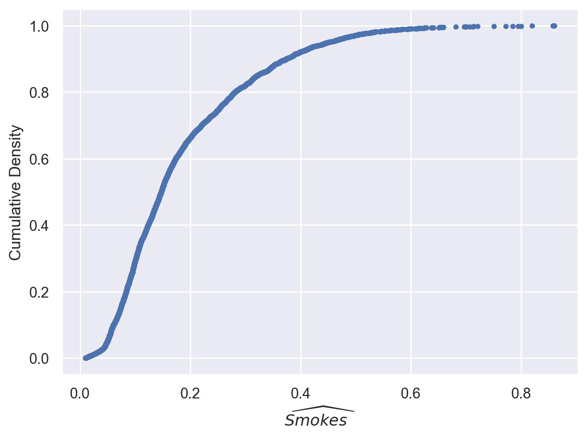
As a final preliminary step, let’s just redefine a function for nearest neighbour matching as we have done in code call-out 3.1. Because we have discussed these matching functions at some length above, we will not go into this in much depth here. Just note that this function will accept an unmatched data frame, and returned a matched dataframe where each treated unit is matched to its nearest neighbour, and this will be conducted without replacement.
def nearest_neighbour(df, treat_col, pscore_col):
"""
This function returns a matched control for each unit with treat_col==1.
To generate this matched control, it finds the closest unit with
treat_col==0 based on the variable indicated in pscore_col. Once units
are used as a matched control, they are removed from potential future
controls (matching without replacement).
"""
# Separate treatment and control groups
treated = df[df[treat_col] == 1].copy()
control = df[df[treat_col] == 0].copy()
# Index for holding controls which have been previously used in match
matched_pairs = []
# Iterate through each treated unit and find matched control
for idx, treat_row in treated.iterrows():
# Compute the absolute differences between the treated unit and all control units
control['distance'] = (control[pscore_col] - treat_row[pscore_col]).abs()
# Find the control unit with the minimum distance
closest_control_idx = control['distance'].idxmin()
closest_control_row = control.loc[closest_control_idx]
# Append the treated and control units as a matched pair
matched_pairs.append((treat_row, closest_control_row))
# Remove the matched control unit from the control group
control = control.drop(closest_control_idx)
# Combine the matched pairs back into a single DataFrame
matched_treated = pd.DataFrame([t[0] for t in matched_pairs])
matched_control = pd.DataFrame([t[1] for t in matched_pairs])
matched_units_df = pd.concat([matched_treated, matched_control], ignore_index=True)
return matched_units_dfIf we wish to be sure that this has worked, we can apply this function to our raw data, and confirm that we effectively generate a matched unit for each treated unit. We do this below seeing that initially these data consist of 864 smokers and 3,778 non-smokers, while after matching the data consist of 864 of each group.
matched_data = nearest_neighbour(birth_weight, 'mbsmoke', 'pscore')
N_orig = birth_weight['mbsmoke'].value_counts()
print(N_orig)
N_match = matched_data['mbsmoke'].value_counts()
print(N_match)mbsmoke
0 3778
1 864
Name: count, dtype: int64
mbsmoke
1 864
0 864
Name: count, dtype: int64We will now turn to consider practicalities in conducting our matches, and considering the balance of resulting matches. Many of these practical issues are discussed in Caliendo and Kopeinig (2008), who provide a particular useful applied set of recommendations for both trimming propensity scores to ensure that common support assumptions are met, and assessing balance of resulting matches, which are discussed in turn below.
Trimming to Ensure Common Support
A first consideration is whether the propensity score estimates suggest that overlap is unlikely to be met. Prior to any estimation we will wish to inspect overlap, given that violation of common support will introduce bias in estimation even if conditional unconfoundedness assumptions are met. If we inspect the propensity score just visually in this case, we can actually see that we may be relatively satisfied that we do not have major issues with overlap. In the histograms displayed below we see that for virtually the entirety of the support of propensity scores for the smoking group there are individuals with similar propensity scores in the non-smoking group:
# Visualization of Propensity Score overlap
plt.figure(figsize=(10, 6))
for label, df in birth_weight.groupby('mbsmoke'):
# Use the treatment label for clarity in the legend
smoker_label = 'Yes' if label == 1 else 'No'
plt.hist(df['pscore'], bins=50, alpha=0.5, label=f'{treatment_label}: {smoker_label}', density=True)
# Apply the labels for the axes and title
plt.xlabel(pscore_label)
plt.ylabel('Density')
plt.title(f'{pscore_label} Overlap')
plt.legend(title=treatment_label)
plt.show()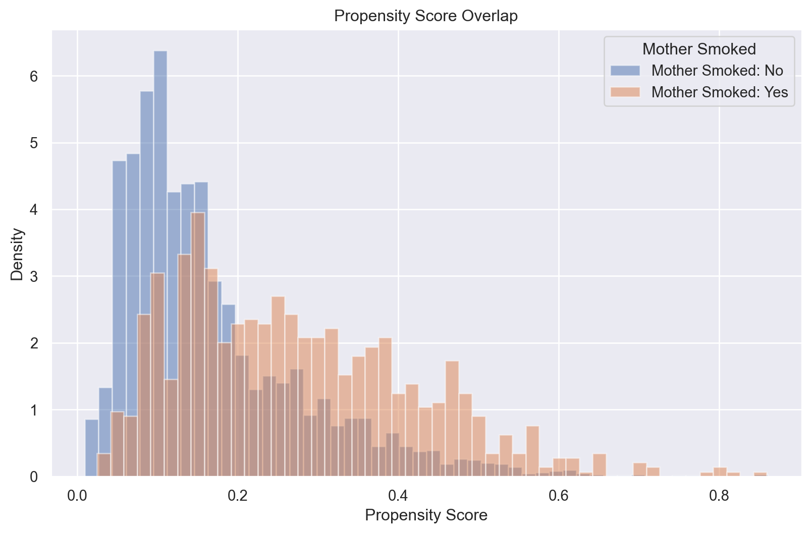
Indeed, we can ensure that our visual inspection above is correct. Let’s check below whether there are any treated units with a propensity score that is more extreme than potential donors:
# Separate treated and control groups based on the defined labels
treated = birth_weight[birth_weight['mbsmoke'] == 1]
control = birth_weight[birth_weight['mbsmoke'] == 0]
# Check for overlap and update the output to be more descriptive
overlap_check = birth_weight.groupby('mbsmoke')['pscore'].agg(['min', 'max'])
overlap_check.index = [f'{treatment_label}: Yes', f'{treatment_label}: No'] # Use labels instead of 1 and 0
print("Overlap Check for Propensity Scores:")
print(overlap_check)Overlap Check for Propensity Scores:
min max
Mother Smoked: Yes 0.009717 0.860405
Mother Smoked: No 0.024743 0.859415We see here that the entire range of propensity scores among treated units is contained in the propensity score of controls, and so we are probably quite safe to not worry about issues with overlap. Nevertheless, in the interests of considering what to do in cases where we may be more concerned about overlap, we consider two procedures discussed in Caliendo and Kopeinig (2008) (and Smith and Todd (2005), Heckman, Lalonde, and Smith (1999))
Minima and Maxima Comparison
The minima and maxima comparison involves deleting observations whose propensity scores are smaller than the minimum or larger than the maximum in the opposite group. This ensures that we only keep observations within the common support region. Below we define a function which trims based on the common support among groups. This simply takes a data frame along with an indicator of treatment and the propensity score, and returns the sub-set of data for which a common support exists:
# Define function to implement minima and maxima comparison
def minima_maxima_trimming(df, treat_col, pscore_col):
treated = df[df[treat_col] == 1]
control = df[df[treat_col] == 0]
min_treated_pscore = treated[pscore_col].min()
max_treated_pscore = treated[pscore_col].max()
min_control_pscore = control[pscore_col].min()
max_control_pscore = control[pscore_col].max()
common_support_min = max(min_treated_pscore, min_control_pscore)
common_support_max = min(max_treated_pscore, max_control_pscore)
trimmed_df = df[(df[pscore_col] >= common_support_min) & (df[pscore_col] <= common_support_max)]
return trimmed_dfWe visualize the propensity score overlap after implementing the trimming procedure, where we see that only a few observations are trimmed at the upper and lower end when compared to Figure 1.
# Visualization of Propensity Score overlap after trimming
trimmed_birth_weight = minima_maxima_trimming(birth_weight, 'mbsmoke', 'pscore')
plt.figure(figsize=(10, 6))
for label, df in trimmed_birth_weight.groupby('mbsmoke'):
# Use the treatment label for clarity in the legend
smoker_label = 'Yes' if label == 1 else 'No'
plt.hist(df['pscore'], bins=50, alpha=0.5, label=f'{treatment_label}: {smoker_label}', density=True)
plt.xlabel(pscore_label)
plt.ylabel('Density')
plt.title(f'{pscore_label} Overlap after Trimming')
plt.legend(title=treatment_label)
plt.show()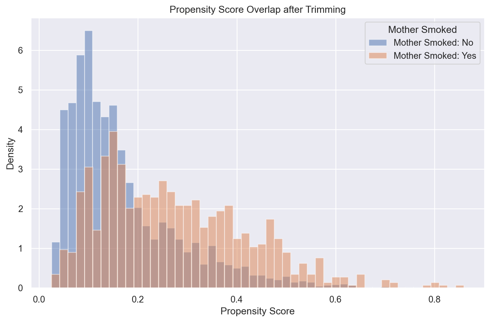
Trimming based on the support region
Another procedure, discussed formally in Smith and Todd (2005), is to only consider units with a non-zero density of the propensity score, at the same time discarding propensity scores where there is a very low density of observations in either group. In particular, this requires estimating densities of the propensity score for both treated and control units \(\widehat{f}(P|D=1)\) and \(\widehat{f}(P|D=0)\). Smith and Todd (2005) suggest estimating these densities use a kernel density estimator, and they suggest doing this with a bandwidth parameter for constructing the kernel as laid out by Silverman (1986), which is to define the bandwidth as \(h=\sigma \times N^{1/5}\), where \(\sigma\) refers to the standard deviation of data. Fortunately, by default, Python employs Silverman’s rule of thumb to select bandwidths in kernel densities when implemented using Seaborn’s kdeplot. We estimate these densities as belwo, employing a Gaussian kernel.
from scipy.stats import gaussian_kde
# Plot kernel density estimates
sns.kdeplot(treated['pscore'], label='Treated')
sns.kdeplot(control['pscore'], label='Control')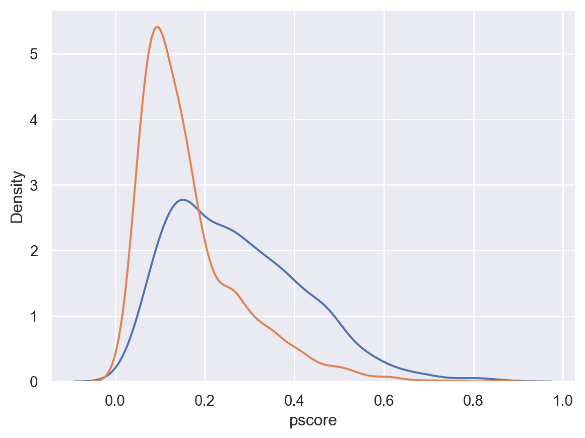
We can see in the plot based on these densities that very low densities are observed around about 0.8 among the treated units, or around about 0.6 in the untreated units. The proposal of Smith and Todd (2005) is to keep the union of units for which the density of the propensity score is 0 in both groups. They additionally suggest that units with propensity scores with very low densities in either group should be discarded. Specifically, if a very low density of a propensity score exists for the treated, observations with this score should be removed in both treated and control samples. They suggest setting a density cut-off trimming level \(c_q\) that keeps observations with a propensity score \(P\) such that: \[ P: \widehat{f}(P|D=1)>c_q \text{ and } \widehat{f}(P|D=0)>c_q \] where \(c_q\) is set such that some fixed low proportion of data is removed.
This definition requires calculating the density a propensity score would be observed with based on the distributions for \(D=1\) and \(D=0\). Below we estimate each of these density functions, and then apply them to the entire dataset which allows us to see the density of a given \(P\) in both groups:
df = birth_weight
treatment_col = 'mbsmoke'
pscore_col = 'pscore'
# Separate treated (D=1) and control (D=0) groups
treated = df[df[treatment_col] == 1].copy()
control = df[df[treatment_col] == 0].copy()
# Estimate the density functions for treated and control groups
# Nonparametric density estimators (KDE) for each group
kde_treated = gaussian_kde(treated[pscore_col])
kde_control = gaussian_kde(control[pscore_col])
# Apply densities to all units to consider density of P|D=1 and P|D=0
df['density1'] = kde_treated(df[pscore_col])
df['density0'] = kde_control(df[pscore_col])Now, based on the quantities density1 and density0, we can set some value \(c_q\) as a criteria for keeping observations. For example, below we can see that if we use some very low density value like 0.05, we will keep the vast majority of observations (>99%):
# Count observations for which density1 > 0.05 and density2 > 0.05
cq = 0.05
nkeep = len(df[(df['density1'] > cq) & (df['density0'] > cq)])
pkeep = nkeep/len(df)
print(f"Setting density at {cq} results in {pkeep*100}% of data kept")Setting density at 0.05 results in 99.3968117190866% of data keptwhile if we use a higher density value, we will trim more observations from our value:
cq = 0.25
nkeep = len(df[(df['density1'] > cq) & (df['density0'] > cq)])
pkeep = nkeep/len(df)
print(f"Setting density at {cq} results in {pkeep*100}% of data kept")Setting density at 0.25 results in 95.97156398104265% of data keptThe proposal of Smith and Todd (2005) is that we should set the valuf of \(c_q\) to trim some small proportion of observations, and they suggest this should be 2% of the data. Below we can do this by trying small values of \(c_q\), gradually increasing until we iterate onto the value which results in a trim proportion of 2%:
pkeep = 1
cq = 0
delta = 0.0001
while pkeep>0.98:
cq = cq+delta
nkeep = len(df[(df['density1'] > cq) & (df['density0'] > cq)])
pkeep = nkeep/len(df)
print(f"The trim value is {cq}, resulting in a final dataset of {nkeep} ({pkeep*100}% of data).")
trimmed_data = df[(df['density1'] > cq) & (df['density0'] > cq)]The trim value is 0.1635999999999983, resulting in a final dataset of 4549 (97.99655320982336% of data).Finally, we can see the resulting propensity score distributions based on this procedure, which makes clear that we have trimmed observations with high propensity scores which had very low densities.
# Visualize the overlap after trimming
plt.figure(figsize=(10, 6))
for label, df_group in trimmed_data.groupby('mbsmoke'):
plt.hist(df_group['pscore'], bins=30, alpha=0.5, label=f'Mother Smoked: {label}', density=True)
plt.xlabel('Propensity Score')
plt.ylabel('Density')
plt.title('Propensity Score Overlap after Ensuring Common Support')
plt.legend(title='Mother Smoked')
plt.show()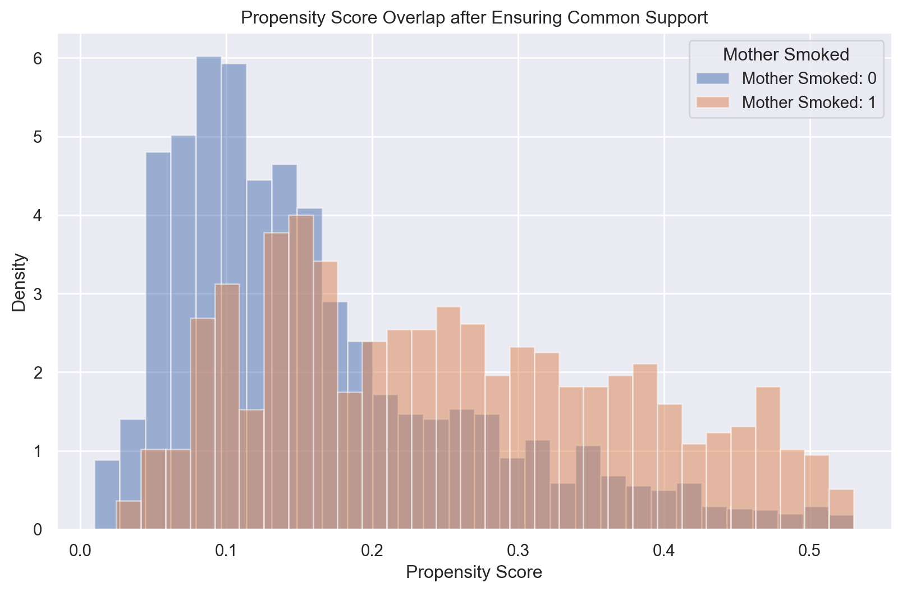
Covariate Balance
A second consideration in implementing matching is whether balance is indeed achieved once matching has been conducted. Caliendo and Kopeinig (2008) suggest a number of ways such procedures can be implemented, and we examine two of these below.
t-Tests of Balance
A first consideration is to simply conduct t-tests of balance across the treated and the matched sample. Below, we use ttest_ind from the scipy.stats library to implement t-tests for equality of means across groups.
def balance_table_ttest(data, columns, group, alpha=0.05):
"""
This function calculates the balance of covariates between groups using t-tests,
and indicates whether the null hypothesis of equal means is rejected at the specified significance level.
"""
balance_results = {}
for col in columns:
group1 = data[data[group] == 1][col]
group0 = data[data[group] == 0][col]
t_stat, p_val = ttest_ind(group1, group0, equal_var=False) # Only two values are returned
reject_null = p_val < alpha
balance_results[covariate_labels[col]] = {
't-statistic': t_stat,
'p-value': p_val,
'Reject Null (p < {:.2f})'.format(alpha): reject_null
}
return pd.DataFrame(balance_results).TWe can apply this with our original data, resulting in a test of balance suggesting substantial misbalance, suggesting that individuals who smoke and who do not smoke during pregnancy are different in all observable characteristics considered:
# Define the significance level
alpha = 0.05
# Check balance before matching
print("Balance before matching (t-test)")
balance_before = balance_table_ttest(birth_weight, covariates, 'mbsmoke', alpha)
balance_beforeBalance before matching (t-test)| t-statistic | p-value | Reject Null (p < 0.05) | |
|---|---|---|---|
| Married | -15.1183 | 0.0 | True |
| Mother's Age | -8.121774 | 0.0 | True |
| Father's Age | -7.650927 | 0.0 | True |
| Mother's Race | -2.655645 | 0.008019 | True |
| Father's Race | -4.481255 | 0.000008 | True |
| Mother's Education | -15.279127 | 0.0 | True |
| First Baby | -4.451716 | 0.000009 | True |
| Months Since Last Birth | 4.659539 | 0.000004 | True |
| Father Hispanic | -0.62364 | 0.53297 | False |
| Mother Foreign Born | -5.200576 | 0.0 | True |
| Birth Order | 4.012094 | 0.000064 | True |
| Prenatal Care | 5.723717 | 0.0 | True |
| Previous Child Death | 4.175801 | 0.000032 | True |
| Low Birth Weight | 5.438906 | 0.0 | True |
However, if we now consider the matched sample based on the nearest neighbour procedure implemented above, we see a quite different story. Once matching on propensity score, we observe balance on all observables, suggesting that at least for these measures, the balancing property of the propensity score is clear.
# Check balance after matching
print("Balance after matching (t-test)")
balance_after = balance_table_ttest(matched_data, covariates, 'mbsmoke', alpha)
balance_afterBalance after matching (t-test)| t-statistic | p-value | Reject Null (p < 0.05) | |
|---|---|---|---|
| Married | -0.096295 | 0.923298 | False |
| Mother's Age | 0.689899 | 0.490353 | False |
| Father's Age | -0.811122 | 0.417408 | False |
| Mother's Race | 0.061095 | 0.95129 | False |
| Father's Race | -0.168294 | 0.866372 | False |
| Mother's Education | 0.209003 | 0.834472 | False |
| First Baby | -0.890913 | 0.3731 | False |
| Months Since Last Birth | 0.298156 | 0.76562 | False |
| Father Hispanic | -0.262655 | 0.792848 | False |
| Mother Foreign Born | 0.639611 | 0.522511 | False |
| Birth Order | 0.375764 | 0.707139 | False |
| Prenatal Care | -0.664159 | 0.506677 | False |
| Previous Child Death | 0.103329 | 0.917714 | False |
| Low Birth Weight | -0.153006 | 0.878412 | False |
Standardized mean differences
An alternative consideration is to inspect standardised mean differences. This consists of considering the standardised bias (SB), both before matching, calculated as follows: \[ SB_{before}=100\cdot \frac{\bar{X}_{1}-\bar{X}_{0}}{\sqrt{0.5\cdot (V_{1}(X)+V_{0}(X))}} \] and calculated after matching: \[ SB_{after}=100\cdot \frac{\bar{X}_{1M}-\bar{X}_{0M}}{\sqrt{0.5\cdot (V_{1M}(X)+V_{0M}(X))}} \] Here \(\bar{X}\) refers to means, \(V(X)\) refers to the variance, subsets refer to treated or control (1 vs 0) or matched versus unmatched samples (M or nothing).
We define a function below which calculates these standardised differences, returning a dictionary containing the standardised bias for each covariate considered.
# Function to calculate standardized mean differences
def standardized_mean_differences(df, treatment, covariates):
treated = df[df[treatment] == 1]
control = df[df[treatment] == 0]
smd = {}
for covariate in covariates:
mean_treated = treated[covariate].mean()
mean_control = control[covariate].mean()
pooled_std = np.sqrt((treated[covariate].var() + control[covariate].var()) / 2)
smd[covariate] = (mean_treated - mean_control) / pooled_std
return smdWe can now apply this both based on original and matched data. Ultimately, we will generate a dataframe containing each covariate’s name, as well as the unadjusted and adjusted SB.
# Calculate standardized mean differences before and after matching
smd_unadjusted = standardized_mean_differences(birth_weight, 'mbsmoke', covariates)
smd_adjusted = standardized_mean_differences(matched_data, 'mbsmoke', covariates)
# Create a DataFrame for the results
smd_df = pd.DataFrame({
'Covariate': covariates_full, # Use full names insted of varlabels
'Unadjusted': [smd_unadjusted[cov] for cov in covariates],
'Adjusted': [smd_adjusted[cov] for cov in covariates]
})
smd_df| Covariate | Unadjusted | Adjusted | |
|---|---|---|---|
| 0 | Married | -0.595301 | -0.004633 |
| 1 | Mother's Age | -0.300179 | 0.033193 |
| 2 | Father's Age | -0.308888 | -0.039025 |
| 3 | Mother's Race | -0.102945 | 0.002939 |
| 4 | Father's Race | -0.175592 | -0.008097 |
| 5 | Mother's Education | -0.547436 | 0.010056 |
| 6 | First Baby | -0.166327 | -0.042864 |
| 7 | Months Since Last Birth | 0.184197 | 0.014345 |
| 8 | Father Hispanic | -0.023091 | -0.012637 |
| 9 | Mother Foreign Born | -0.170616 | 0.030773 |
| 10 | Birth Order | 0.154527 | 0.018079 |
| 11 | Prenatal Care | 0.233992 | -0.031954 |
| 12 | Previous Child Death | 0.161322 | 0.004971 |
| 13 | Low Birth Weight | 0.226841 | -0.007361 |
Finally, we can plot this, observing the sharp difference in standardised bias between adjusted and unadjusted groups. In this case, we observe that all values of \(SB\) for the matched group are less than 0.1. While no formal definition exists for what is a “good” match, Caliendo and Kopeinig (2008) suggest that “in most empirical studies an SB below 3% or 5% after matching is seen as sufficient”. In general we observe this to hold, though in the case of prenatal care (-5.22%), this is at the limit and may suggest further refinements to the matching process.
# Melt the DataFrame for easier plotting
smd_melted = smd_df.melt(id_vars='Covariate', var_name='Sample', value_name='Mean Differences')
# Plot with labeled covariates
plt.figure(figsize=(10, 6))
for sample in smd_melted['Sample'].unique():
subset = smd_melted[smd_melted['Sample'] == sample]
plt.scatter(subset['Mean Differences'], subset['Covariate'], label=sample, s=100)
plt.axvline(x=0, color='grey', linestyle='--')
plt.xlabel('Standardized Mean Differences')
plt.ylabel('Covariate')
plt.title('Covariate Balance Before and After Matching')
plt.legend(title='Sample')
plt.show()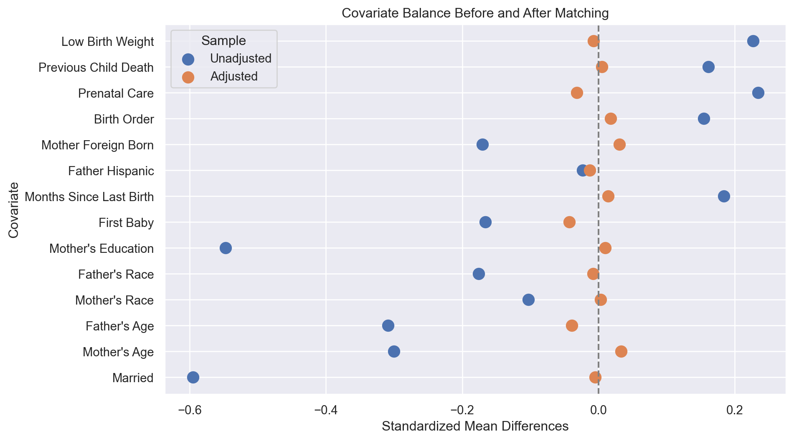
Comparing Covariate Balance Before and After Trimming
Finally, noting that the previous process worked with the matched data in the untrimmed sample, we can also consider how things look using the trimming procedure suggested by Smith and Todd (2005). In general, because we observe quite good overlap in this setting, we may expect that no major differences will be observed, but for the sake of completeness we examine this below. We can do this based on our previously defined functions, and using the trimmed data:
# Generate match based on trimmed data
matched_trimmed_data = nearest_neighbour(trimmed_data, 'mbsmoke', 'pscore')
# Calculate standardized mean differences before and after trimming and matching
smd_unadjusted_trimmed = standardized_mean_differences(trimmed_data, 'mbsmoke', covariates)
smd_adjusted_trimmed = standardized_mean_differences(matched_trimmed_data, 'mbsmoke', covariates)
# Create a DataFrame for the results
smd_df_trimmed = pd.DataFrame({
'Covariate': covariates_full, # full names of variables
'Unadjusted': [smd_unadjusted_trimmed[cov] for cov in covariates],
'Adjusted': [smd_adjusted_trimmed[cov] for cov in covariates]
})
smd_df_trimmed| Covariate | Unadjusted | Adjusted | |
|---|---|---|---|
| 0 | Married | -0.557414 | 0.002446 |
| 1 | Mother's Age | -0.314116 | 0.016346 |
| 2 | Father's Age | -0.293223 | -0.038011 |
| 3 | Mother's Race | -0.101107 | -0.006271 |
| 4 | Father's Race | -0.169052 | -0.014412 |
| 5 | Mother's Education | -0.562787 | -0.044426 |
| 6 | First Baby | -0.132484 | -0.022512 |
| 7 | Months Since Last Birth | 0.151812 | 0.004148 |
| 8 | Father Hispanic | -0.009343 | 0.013448 |
| 9 | Mother Foreign Born | -0.164942 | 0.031667 |
| 10 | Birth Order | 0.130297 | 0.004049 |
| 11 | Prenatal Care | 0.211742 | -0.048894 |
| 12 | Previous Child Death | 0.148590 | 0.013280 |
| 13 | Low Birth Weight | 0.183553 | -0.024978 |
Comparing the standardised bias here and above, we observe very little difference, and indeed, the SB on prenatal care usage becomes slightly worse. In this case, we may wish to consider a richer specification for the propensity score, potentially including interactions and higher order terms for covariates, and reconsidering the match quality.
# Melt the DataFrame for easier plotting
smd_melted_trimmed = smd_df_trimmed.melt(id_vars='Covariate', var_name='Sample', value_name='Mean Differences')
# Plot with labeled covariates after trimming and matching
plt.figure(figsize=(10, 6))
for sample in smd_melted_trimmed['Sample'].unique():
subset = smd_melted_trimmed[smd_melted_trimmed['Sample'] == sample]
plt.scatter(subset['Mean Differences'], subset['Covariate'], label=sample, s=100)
plt.axvline(x=0, color='grey', linestyle='--')
plt.xlabel('Standardized Mean Differences')
plt.ylabel('Covariate')
plt.title('Covariate Balance after Trimming and Matching')
plt.legend(title='Sample')
plt.show()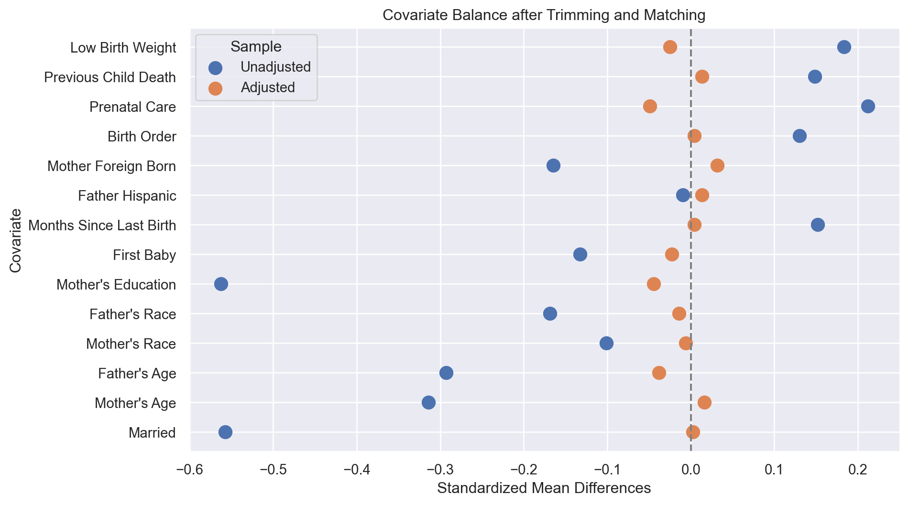
Code Call-out 3.3 - Inverse Propensity Score Weighting, Regression and Matching
In this code call-out, we will consider different procedures one may employ when maintaining a conditional unconfoundedness assumption. To illustrate alternative procedures – namely regression, inverse propensity score weighting and matching, we will work with an example laid out in Millimet and Tchernis (2009) and re-examined in Sant’Anna and Song (2019). In this case, the authors consider the impact of membership in a trade agreement such as GAT and WTO on a country’s measures of environmental sustainability. We will work with the data originally from Millimet and Tchernis (2009), in particular focusing on one of multiple outcomes, which is CO\(_2\) emissions per capita. Below we will explore the implementation of matching strategies, regression strategies, and re-weighting strategies, setting up each of these procedures in turn, documenting both the estimation of an ATE, as well as an ATT in each case.
Prior to getting into the mechanics of each, let’s load the required libraries used below, load our data and generate a number of key variables. We do this below:
import numpy as np
import pandas as pd
import matplotlib.pyplot as plt
import seaborn as sns
import statsmodels.api as sm
# Load the data
df = pd.read_csv("data/Millimet_Tchernis_2009.csv")
# Rescale GDP to be in 1000s of dollars
df['rgdpch'] = df['rgdpch']/1000
# Create the necessary variables
df['rgdpchXareap'] = df['rgdpch'] * df['areap']
df['rgdpchXpolity'] = df['rgdpch'] * df['polity']
df['areapXpolity'] = df['areap'] * df['polity']
# Define covariates and treatment variable
covariates = ['rgdpch', 'polity', 'areap',
'rgdpchXareap', 'rgdpchXpolity', 'areapXpolity']
treatment = 'gattwto'
outcome = 'co2perc'Above we have loaded the data of Millimet and Tchernis (2009) which consists of an outcome variable (co2perc, for CO\(_2\) per capita), as well as a series of variables which Millimet and Tchernis (2009) consider as required for a conditional unconfoundedness assumption to be reasonable. As discussed in Sant’Anna and Song (2019), here we will not delve deeply into whether such assumptions are relevant in this particular case, though further discussion of these assumptions can be found in Section 3.5 of the book. In particular, we consider the following variables for conditioning: real GDP per capita (rgdpch), land area divided by population (areap) and an indicator of institutional quality (polity). We also incorporate interactions among each of these pairs of variables. Our treatment of interest is membership in the GATT or WTO (gattwto). Finally note that in order to be able to interpret regression parameters below as ATT or ATEs, we re-centre all of these covariates on zero.
Matching-based estimation
Because we have already considered matching-based procedures above, let’s begin by re-implementing such procedures here. To do this, we will first need to estimate a propensity score, which we do below using a Logit specification, and the covariates mentioned above. In practice we should consider sensitivity to such choices as discussed in code call-out 3.2 above, but here in the interests of simplicity, we will simply follow Millimet and Tchernis (2009) and Sant’Anna and Song (2019) to trim our estimated propensity score at 0.05 and 0.95.
from statsmodels.discrete.discrete_model import Logit
import seaborn as sns
X = df[covariates]
X = sm.add_constant(X)
y = df[treatment]
logit_model = Logit(y, X).fit()
df['pscore'] = logit_model.predict(X)
df = df[(df['pscore'] >= 0.05) & (df['pscore'] <= 0.95)]Optimization terminated successfully.
Current function value: 0.446603
Iterations 8Let’s now move on to implementing a propensity score matching estimator. We have seen this extensively in code call-out 3.1, so below we will simply consider one specific example, which is to do nearest neighbour matching with matches completed in random order. We could write a new function to do this, but it turns out that it is sufficient to use the nearest_neighbour_replacement function we previously defined (in code call-outs 3.1 and 3.2) to do this. If you have not previously run these code call-outs, you should define the nearest_neighbour_replacement function from the above code prior to proceeding. Assuming this has been done, we will use this and match all the treated units, such that we generate an ATT by matching on the propensity score:
matched_df_ATT = nearest_neighbour_replacement(df, treatment, 'pscore')
ATT_match = matched_df_ATT[matched_df_ATT[treatment] == 1][outcome].mean() - matched_df_ATT[matched_df_ATT[treatment] == 0][outcome].mean()
ATT_match-0.4886485853846154We can similarly estimate an average treatment effect on the untreated by conducting a similar match, however this time using non-treated individuals.
df['untreat'] = 1 - df[treatment]
matched_df_ATU = nearest_neighbour_replacement(df, 'untreat', 'pscore')
matched_df_ATE = pd.concat([matched_df_ATT, matched_df_ATU], axis=0)
ATE_match = matched_df_ATE[matched_df_ATE[treatment] == 1][outcome].mean() - matched_df_ATE[matched_df_ATE[treatment] == 0][outcome].mean()
ATE_match-0.7429211638888891Regression-based estimation
Let’s begin by considering our standard OLS regression model, as laid out in equation 3.31 of the text. Because we wish to allow separate effects of covariates \(X\) on outcomes \(Y\) among treated and untreated individuals, we will first create a full set of interactions between each covariate and the treatment indicator, before including both covariates, the interaction with the treatment indicator, and the treatment indicator itself in a data frame for estimation:
# Re-scale all variables so that they are mean-zero
for column in covariates:
df[column] = (df[column] - df[column].mean())
interaction_terms = [f'{var}_T' for var in covariates]
df[interaction_terms] = df[covariates].multiply(df[treatment], axis=0)
df.head()| year | gattwto | co2perc | rgdpch | areap | polity | rgdpchXareap | rgdpchXpolity | areapXpolity | pscore | untreat | rgdpch_T | polity_T | areap_T | rgdpchXareap_T | rgdpchXpolity_T | areapXpolity_T | |
|---|---|---|---|---|---|---|---|---|---|---|---|---|---|---|---|---|---|
| 0 | 1990 | 0 | 0.503803 | -2.0045 | 77.367330 | -8.227778 | 92.005533 | -25.294678 | -839.094123 | 0.715673 | 1 | -0.0000 | -0.000000 | 0.000000 | 0.000000 | -0.000000 | -0.000000 |
| 1 | 1990 | 1 | 3.385655 | 3.2635 | 39.653880 | 5.772222 | 463.955298 | 38.041322 | 602.803327 | 0.877118 | 0 | 3.2635 | 5.772222 | 39.653880 | 463.955298 | 38.041322 | 602.803327 |
| 4 | 1990 | 1 | 0.033388 | -2.9335 | -39.780824 | -8.227778 | -133.771935 | -18.791678 | -19.057045 | 0.668386 | 0 | -2.9335 | -8.227778 | -39.780824 | -133.771935 | -18.791678 | -19.057045 |
| 6 | 1990 | 1 | 0.111757 | -2.9355 | -13.648740 | -8.227778 | -108.720669 | -18.777678 | -201.981633 | 0.688372 | 0 | -2.9355 | -8.227778 | -13.648740 | -108.720669 | -18.777678 | -201.981633 |
| 7 | 1990 | 1 | 0.143250 | -2.5345 | -43.268765 | -6.227778 | -136.639738 | -18.864678 | 7.785152 | 0.647175 | 0 | -2.5345 | -6.227778 | -43.268765 | -136.639738 | -18.864678 | 7.785152 |
Above we have done this in a quite efficient way, but a way which might not look entirely straightforward if you have not seen it before. We have done this using a “list comprehension”. This has been to first generate list of variables called interaction_terms which for each variable in the covariate list generates a name like age_T, and then immediately below, generates the variable interacted with the treatment indicator. We can see that this generates the full set of interactions in the resulting data frame above.
Let’s now look at a simple regression where out outcome (CO\(_2\) emissions per capita) is regressed on our treatment of interest (trade organisation membership) as well as the full set of interactive controls:
# Prepare the data for regression
X = df[covariates + interaction_terms + [treatment]]
X = sm.add_constant(X)
y = df[outcome]
# Perform the linear regression
reg_model = sm.OLS(y, X).fit()
print(reg_model.summary())
# Extract the coefficient for the treatment variable (ATT)
coef_treatment = reg_model.params[treatment] OLS Regression Results
==============================================================================
Dep. Variable: co2perc R-squared: 0.731
Model: OLS Adj. R-squared: 0.710
Method: Least Squares F-statistic: 34.68
Date: Mon, 15 Jun 2026 Prob (F-statistic): 1.35e-40
Time: 01:33:49 Log-Likelihood: -349.74
No. Observations: 180 AIC: 727.5
Df Residuals: 166 BIC: 772.2
Df Model: 13
Covariance Type: nonrobust
===================================================================================
coef std err t P>|t| [0.025 0.975]
-----------------------------------------------------------------------------------
const 2.5430 0.290 8.754 0.000 1.969 3.117
rgdpch 0.6382 0.191 3.338 0.001 0.261 1.016
polity -0.1738 0.098 -1.774 0.078 -0.367 0.020
areap -0.0440 0.014 -3.064 0.003 -0.072 -0.016
rgdpchXareap 0.0139 0.003 4.374 0.000 0.008 0.020
rgdpchXpolity 0.0371 0.023 1.618 0.108 -0.008 0.082
areapXpolity -0.0016 0.001 -1.330 0.185 -0.004 0.001
rgdpch_T 0.1484 0.197 0.753 0.452 -0.241 0.537
polity_T 0.1823 0.108 1.689 0.093 -0.031 0.395
areap_T 0.0492 0.015 3.326 0.001 0.020 0.078
rgdpchXareap_T -0.0169 0.003 -5.048 0.000 -0.024 -0.010
rgdpchXpolity_T -0.0359 0.024 -1.471 0.143 -0.084 0.012
areapXpolity_T 0.0013 0.001 1.025 0.307 -0.001 0.004
gattwto -0.5796 0.329 -1.759 0.080 -1.230 0.071
==============================================================================
Omnibus: 56.420 Durbin-Watson: 2.378
Prob(Omnibus): 0.000 Jarque-Bera (JB): 214.854
Skew: 1.163 Prob(JB): 2.21e-47
Kurtosis: 7.820 Cond. No. 2.48e+03
==============================================================================
Notes:
[1] Standard Errors assume that the covariance matrix of the errors is correctly specified.
[2] The condition number is large, 2.48e+03. This might indicate that there are
strong multicollinearity or other numerical problems.Here, because all controls are mean 0, we can understand the estimated effect on gattwto as referring to the mean effect in our sample. Now, let’s consider the implementation described in Equation 3.32 of the text. We can see that this is indeed equivalent to the regression implementation above. First, let’s generate \(\widehat\mu_i(0)\). This is done by estimating the regression only among individuals who are un-treated, and then predicting outcomes among all individuals based on the paramters estimated in the un-treated group. We do this below.
# Prepare the data for regression
df_control = df[df[treatment] == 0]
X_control = df_control[covariates]
X_control = sm.add_constant(X_control)
y_control = df_control[outcome]
model = sm.OLS(y_control, X_control).fit()
print(model.summary())
X_full = df[covariates]
X_full = sm.add_constant(X_full)
df['Y0hat'] = model.predict(X_full) OLS Regression Results
==============================================================================
Dep. Variable: co2perc R-squared: 0.688
Model: OLS Adj. R-squared: 0.645
Method: Least Squares F-statistic: 15.83
Date: Mon, 15 Jun 2026 Prob (F-statistic): 1.70e-09
Time: 01:33:49 Log-Likelihood: -98.733
No. Observations: 50 AIC: 211.5
Df Residuals: 43 BIC: 224.9
Df Model: 6
Covariance Type: nonrobust
=================================================================================
coef std err t P>|t| [0.025 0.975]
---------------------------------------------------------------------------------
const 2.5430 0.310 8.190 0.000 1.917 3.169
rgdpch 0.6382 0.204 3.123 0.003 0.226 1.050
polity -0.1738 0.105 -1.660 0.104 -0.385 0.037
areap -0.0440 0.015 -2.866 0.006 -0.075 -0.013
rgdpchXareap 0.0139 0.003 4.092 0.000 0.007 0.021
rgdpchXpolity 0.0371 0.024 1.514 0.137 -0.012 0.086
areapXpolity -0.0016 0.001 -1.245 0.220 -0.004 0.001
==============================================================================
Omnibus: 5.304 Durbin-Watson: 1.771
Prob(Omnibus): 0.071 Jarque-Bera (JB): 5.441
Skew: 0.341 Prob(JB): 0.0658
Kurtosis: 4.466 Cond. No. 392.
==============================================================================
Notes:
[1] Standard Errors assume that the covariance matrix of the errors is correctly specified.You can note in the regression summary that this just provides identical output from the un-interacted regression parameters we estimated previously given that in our prior model we could separately model the effect of the controls on outcomes both in the untreated and the treated goup. Now, let’s do the same thing to generate \(\widehat\mu_i(1)\):
df_treat = df[df[treatment] == 1]
X_treat = df_treat[covariates]
X_treat = sm.add_constant(X_treat)
y_treat = df_treat[outcome]
model = sm.OLS(y_treat, X_treat).fit()
print(model.summary())
df['Y1hat'] = model.predict(X_full) OLS Regression Results
==============================================================================
Dep. Variable: co2perc R-squared: 0.744
Model: OLS Adj. R-squared: 0.731
Method: Least Squares F-statistic: 59.55
Date: Mon, 15 Jun 2026 Prob (F-statistic): 4.60e-34
Time: 01:33:49 Log-Likelihood: -250.93
No. Observations: 130 AIC: 515.9
Df Residuals: 123 BIC: 535.9
Df Model: 6
Covariance Type: nonrobust
=================================================================================
coef std err t P>|t| [0.025 0.975]
---------------------------------------------------------------------------------
const 1.9634 0.152 12.957 0.000 1.663 2.263
rgdpch 0.7866 0.046 17.009 0.000 0.695 0.878
polity 0.0084 0.044 0.191 0.849 -0.079 0.096
areap 0.0052 0.003 1.514 0.133 -0.002 0.012
rgdpchXareap -0.0030 0.001 -2.949 0.004 -0.005 -0.001
rgdpchXpolity 0.0012 0.008 0.145 0.885 -0.015 0.017
areapXpolity -0.0003 0.000 -0.822 0.413 -0.001 0.000
==============================================================================
Omnibus: 58.630 Durbin-Watson: 2.147
Prob(Omnibus): 0.000 Jarque-Bera (JB): 268.204
Skew: 1.524 Prob(JB): 5.76e-59
Kurtosis: 9.342 Cond. No. 613.
==============================================================================
Notes:
[1] Standard Errors assume that the covariance matrix of the errors is correctly specified.Here regression parameters pick up the relationship between \(y\) and covariates for treated units only, whereas in the fully interacted models the interaction terms pick up differential effects between groups. As such, the parameters above are directly interpretable as the sum of both parameters in the previous model. Now, finally, let’s see that we can indeed replicate the regression estimand from these imputed quantities. One way to do so is simply take the difference between counterfactuals for each unit:
df['tau_i'] = df['Y1hat']-df['Y0hat']
print(df['tau_i'].mean())-0.5795674857719607An alternative way, as shown in the second line of 3.32 is to compare relevant counterfactuals for each group with their true outcome:
df['tau_ii'] = df[treatment] *(df[outcome]-df['Y0hat']) + (1-df[treatment])*(df['Y1hat']-df[outcome])
print(df['tau_ii'].mean())-0.5795674857719597In both cases, we see that regression parameters are identical to those estimated previously.
A nice thing about this latter procedure is that it immediately suggests to us a way to calculate an ATT rather than an ATE. We simply do the same as above, however now only consider the counterfactual comparison for treated units only. This is:
att_reg = df['tau_i'][df[treatment]==1].mean()
print(f"ATT from Regression: {att_reg}")ATT from Regression: -0.42639682854936617Of course once we have regression counterfactuals generated in this way, we could estimate treatment effects for any unit, facilitating the generation of regression-based CATEs. In this particular case we see that the regression based estimates agree reasonably well with the propensity score matching methods explored above. This need not always be the case given that regression-based estimators will impute outcomes for all units, regardless of how close they are to other treated or control units, and extrapolation in regression may result in estimates that diverge from those produced in matching.
Inverse Propensity Score Weighting
Finally, we can examine propensity score weighting methods. We have of course already estimated our propensity score previously, so all we need to do is convert this into weights whereby treated units are weighted as \(\frac{1}{\widehat{P(X)}}\), and untreated units are weighted as \(\frac{1}{(1-\widehat{P(X)})}\). We will generate these weights below, and have a look at what this means graphically:
df['weights'] = np.where(df[treatment] == 1, 1 / df['pscore'], 1 / (1 - df['pscore']))
sns.set_palette("Set1", 2)
hue_order = [1, 0]
sns.scatterplot(x="pscore", y=outcome, data=df, size="weights", hue="gattwto", alpha=0.3, hue_order=hue_order)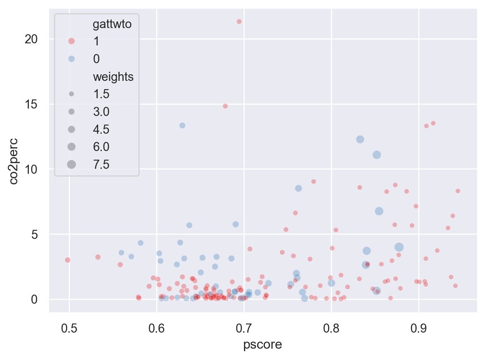
The scatterplot above plots our outcome of interest against estimated propensity scores, scaling each unit by the weight it receives. As we expect, we can see that untreated units with high propensity scores are given high weights because we wish to scale up these observations given their greater similarity to treated units. Similarly, treated units with low propensity scores are given relatively higher weights. In the plot above it is slightly difficult to see the variation in weights among treated units given that there are more treated units, and hence their weights are generally lower. Hoewever, if we plot these separately we can clearly see the inverse pattern in weights by examining the size of the points (as below):
sns.scatterplot(x="pscore", y=outcome, data=df[df['gattwto'] == 1], size="weights", alpha=0.6)
sns.scatterplot(x="pscore", y=outcome, data=df[df['gattwto'] == 0], size="weights", alpha=0.5)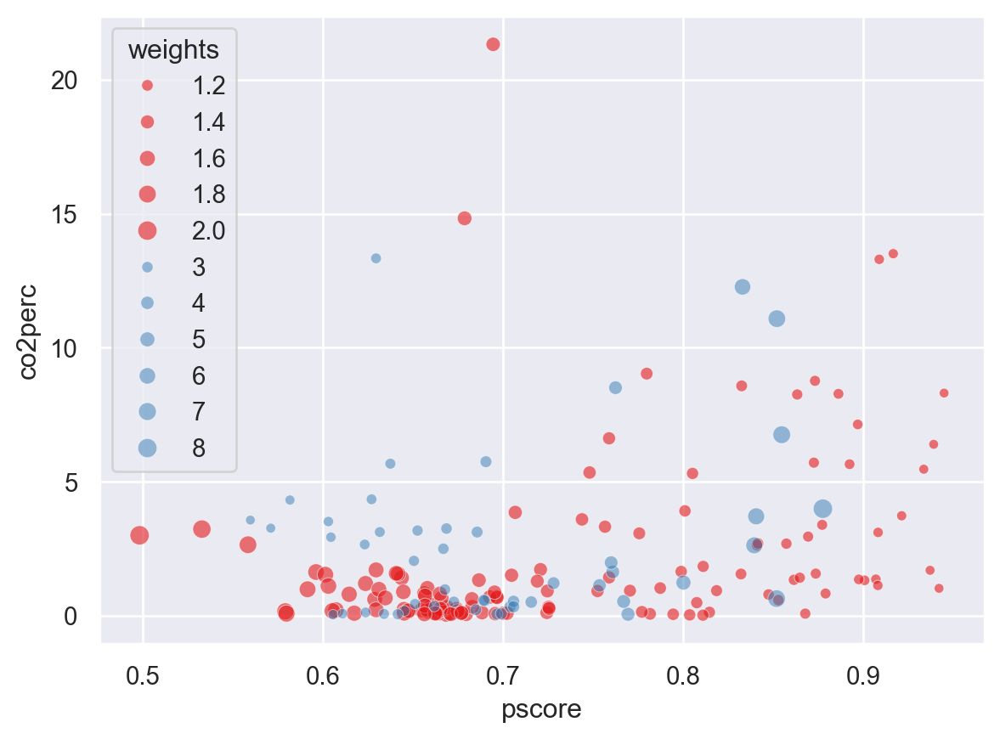
We could certainly further optimise the above graph by providing more illustrative axis titles and ensuring that our legend is clearly labelled as indicative of treated units (blue) and control units (red), and you may wish to do that yourself if you want to practice with graphing in Python. But for our purposes, we can clearly see how inverse propensity score weighting weights up units to seek to maximise the similarity between treated and control samples.
Now we can simply estimate our propensity-score re-weighted estimators. it is useful to see that there is a number of ways to simply arrive at this quantity. The first, and perhaps most cumbersome is to calculate this quantity by hand. Nevertheless, this is quite simple as just take the formulae laid out in Chapter 3 to code. In the case of the ATE, remember that the quantity we wish to calculate is: \[ \widehat\tau^{IPW}_{ATE}=\left(\frac{\frac{1}{N}\sum_{i=1}^N\frac{Y_iW_i}{\widehat{P}(X_i)}}{\frac{1}{N}\sum_{i=1}^N\frac{W_i}{\widehat{P}(X_i)}}\right)-\left(\frac{\frac{(1-W_i)Y_i}{1-\widehat{P}(X_i)}}{\frac{1}{N}\sum_{i=1}^N\frac{1-W_i}{1-\widehat{P}(X_i)}}\right). \] Below, we will calculate the numerator and denominator of each term, before using these to calculate the ATE:
y = df[outcome]
df['Y_w'] = np.where(df[treatment] == 1, y / df['pscore'], y / (1 - df['pscore']))
df['W_w'] = np.where(df[treatment] == 1, 1 / df['pscore'], 1 / (1 - df['pscore']))
NT = df['Y_w'][df[treatment]==1].sum()
NC = df['Y_w'][df[treatment]==0].sum()
DT = df['W_w'][df[treatment]==1].sum()
DC = df['W_w'][df[treatment]==0].sum()
ATE = (NT/DT)-(NC/DC)
print(f"The ATE is: {ATE}")The ATE is: -1.0176269232821913We could of course have used the quantity weight which we calculated above in place of W_w, however we regenerate this so we can see the similarity with the previous line all in one place. Doing this, we calculate an IPW ATE of -1.01, similar, though slightly higher than the regression and nearest neighbour matched quantity. What is perhaps interesting to see is that this quantity can be calculated directly using a weighted regression, where the weights we calculated are used. We do this below:
y = df[outcome]
X = df[[treatment]]
X = sm.add_constant(X)
# Perform the linear regression
reg_model = sm.WLS(y, X, weights=df['weights']).fit()
print(reg_model.summary()) WLS Regression Results
==============================================================================
Dep. Variable: co2perc R-squared: 0.023
Model: WLS Adj. R-squared: 0.018
Method: Least Squares F-statistic: 4.224
Date: Mon, 15 Jun 2026 Prob (F-statistic): 0.0413
Time: 01:33:49 Log-Likelihood: -482.03
No. Observations: 180 AIC: 968.1
Df Residuals: 178 BIC: 974.4
Df Model: 1
Covariance Type: nonrobust
==============================================================================
coef std err t P>|t| [0.025 0.975]
------------------------------------------------------------------------------
const 2.9571 0.349 8.475 0.000 2.269 3.646
gattwto -1.0176 0.495 -2.055 0.041 -1.995 -0.041
==============================================================================
Omnibus: 122.057 Durbin-Watson: 2.180
Prob(Omnibus): 0.000 Jarque-Bera (JB): 773.376
Skew: 2.643 Prob(JB): 1.16e-168
Kurtosis: 11.671 Cond. No. 2.61
==============================================================================
Notes:
[1] Standard Errors assume that the covariance matrix of the errors is correctly specified.As expected, we calculate an identical quantity for the IPW ATE of -1.01. Note finally that we can also do this by simply taking weighted averages of the outcome in each group, and subtracting the weighted control group avarege from the weighted treated group average. We will do this below using numpys average function:
Y1_df = df[df[treatment]==1]
Y0_df = df[df[treatment]==0]
Y1_mean = np.average(Y1_df[outcome], weights=Y1_df['weights'])
Y0_mean = np.average(Y0_df[outcome], weights=Y0_df['weights'])
print(f"Control group average is {Y0_mean:.4f}. Treatment group average is {Y1_mean:.4f}. ATE is {Y1_mean-Y0_mean:.4f}.")Control group average is 2.9571. Treatment group average is 1.9395. ATE is -1.0176.It is useful to see that these are all numerically equivalent ways to calculate an IPW estimate, and that we can simply select that which we prefer to arrive to point estimates.
Finally, note that we can also generate the ATT in this way, simply replacing the weights above with the weights which correspond to an IPW ATT estimator (refer to equation 3.30 of the book):
df['weightsATT'] = np.where(df[treatment] == 1, 1, df['pscore'] / (1 - df['pscore']))
df['Y_w'] = np.where(df[treatment] == 1, y, y*df['pscore'] / (1 - df['pscore']))
NT = df['Y_w'][df[treatment]==1].sum()
NC = df['Y_w'][df[treatment]==0].sum()
DT = df['weightsATT'][df[treatment]==1].sum()
DC = df['weightsATT'][df[treatment]==0].sum()
ATT = (NT/DT)-(NC/DC)
print(f"The ATT is: {ATT:.5f}")The ATT is: -0.99706Once again, this can also be replicated directly via weighted regression (which provides us valid point estimates, though not standard errors), as we see below:
reg_model = sm.WLS(y, X, weights=df['weightsATT']).fit()
print(reg_model.summary()) WLS Regression Results
==============================================================================
Dep. Variable: co2perc R-squared: 0.021
Model: WLS Adj. R-squared: 0.016
Method: Least Squares F-statistic: 3.837
Date: Mon, 15 Jun 2026 Prob (F-statistic): 0.0517
Time: 01:33:49 Log-Likelihood: -487.66
No. Observations: 180 AIC: 979.3
Df Residuals: 178 BIC: 985.7
Df Model: 1
Covariance Type: nonrobust
==============================================================================
coef std err t P>|t| [0.025 0.975]
------------------------------------------------------------------------------
const 3.0939 0.358 8.639 0.000 2.387 3.801
gattwto -0.9971 0.509 -1.959 0.052 -2.001 0.007
==============================================================================
Omnibus: 122.149 Durbin-Watson: 2.178
Prob(Omnibus): 0.000 Jarque-Bera (JB): 769.789
Skew: 2.649 Prob(JB): 6.96e-168
Kurtosis: 11.636 Cond. No. 2.61
==============================================================================
Notes:
[1] Standard Errors assume that the covariance matrix of the errors is correctly specified.In this case we observe that the ATT and the ATE are very similar, though both slightly higher than the corresponding estimates generated by matching and regression. Depending on the specific context and whether particularly large misbalances are observed between units in treatment and control groups, we will not necessarily observe such similarity. In this case we do, given that propensity scores are relatively well balanced and there is broad coverage of higher propensity scores among untreated units, as well as lower propensity scores among untreated units.
References
Almond, Douglas, Kenneth Y. Chay, and David S. Lee. 2005. “The Costs of Low Birth Weight.” The Quarterly Journal of Economics 120 (3): 1031–83. https://EconPapers.repec.org/RePEc:oup:qjecon:v:120:y:2005:i:3:p:1031-1083.
Caliendo, Marco, and Sabine Kopeinig. 2008. “SOME PRACTICAL GUIDANCE FOR THE IMPLEMENTATION OF PROPENSITY SCORE MATCHING.” Journal of Economic Surveys 22 (1): 31–72. https://doi.org/https://doi.org/10.1111/j.1467-6419.2007.00527.x.
Dehejia, Rajeev H., and Sadek Wahba. 1999. “Causal Effects in Nonexperimental Studies: Reevaluating the Evaluation of Training Programs.” Journal of the American Statistical Association 94 (448): 1053–62. http://www.jstor.org/stable/2669919.
———. 2002. “Propensity Score-Matching Methods For Nonexperimental Causal Studies.” The Review of Economics and Statistics 84 (1): 151–61.
Heckman, James J., Robert J. Lalonde, and Jeffrey A. Smith. 1999. “Chapter 31 – the Economics and Econometrics of Active Labor Market Programs.” In, edited by Orley C. Ashenfelter and David Card, 3:1865–2097. Handbook of Labor Economics. Elsevier. https://doi.org/https://doi.org/10.1016/S1573-4463(99)03012-6.
LaLonde, Robert J. 1986. “Evaluating the Econometric Evaluations of Training Programs with Experimental Data.” The American Economic Review 76 (4): 604–20.
Millimet, Daniel L., and Rusty Tchernis. 2009. “On the Specification of Propensity Scores, With Applications to the Analysis of Trade Policies.” Journal of Business & Economic Statistics 27 (3): 397–415. https://doi.org/10.1198/jbes.2009.06045.
Sant’Anna, Pedro H. C., and Xiaojun Song. 2019. “Specification tests for the propensity score.” Journal of Econometrics 210 (2): 379–404. https://doi.org/10.1016/j.jeconom.2019.02.002.
Silverman, Bernard W. 1986. Density Estimation for Statistics and Data Analysis. London: Chapman & Hall.
Smith, Jeffrey A., and Petra Todd. 2005. “Does matching overcome LaLonde’s critique of nonexperimental estimators?” Journal of Econometrics 125 (1): 305–53. https://doi.org/https://doi.org/10.1016/j.jeconom.2004.04.011.